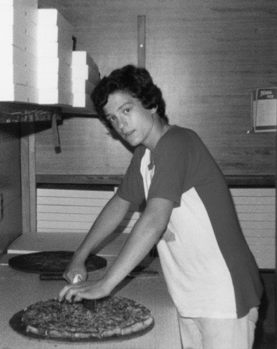
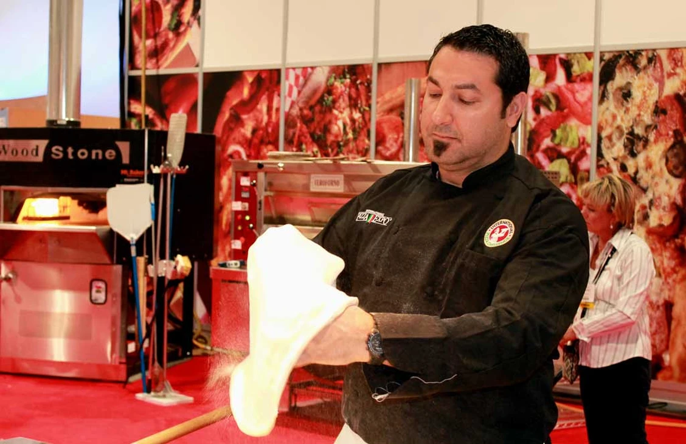
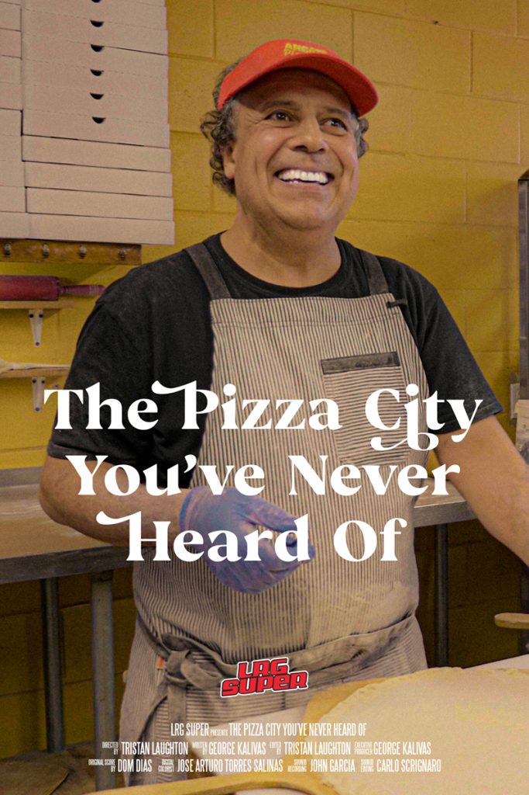

Today, Windsor-style pizza represents more than food. It symbolizes family labour, cultural memory, and resistance to American commercial dominance in a border city.
Begin Exploring
Antonino’s Original Pizza owner Joe Ciaravino was working in the family pizzeria at age 13 (1978). Joe has claimed this was the last day at Arcata, and he pretended to make a Pizza. Retrieved from Antonino’s Original Pizza.

Antonino’s Original Pizza owner Joe Ciaravino and his mother Vita stand proudly in front of the first Antonino’s Original Pizza location in South Windsor, Ontario (2003). Retrieved from Antonino's Original Pizza.

Antonino’s Original Pizza owner Joe Ciaravino outside his new South Windsor location. Retrieved from Antonino's Original Pizza.
Joe Ciaravino grew up watching his parents own Arcata Pizzeria in the early 1970s and occasionally helped at the shop, such as shredding cheese for his mom. As Joe got older, he attended the University of Windsor and earned a Master of Business Administration. After starting his own summer business, Joe knew he loved running a business. Although he tried running a business in the computer field, he eventually returned to a family tradition of pizza. Around this time, he told his mom he wanted to open a pizzeria and his mom was not thrilled. Joe was unfamiliar with making pizza, so he had to start from scratch. In 1999, with his mom's assistance, Joe opened the first Antonino's Original Pizza location on the corner of North Talbot and Howard Rd. Joe named the location after his father as a tribute. On the first day, the pizzeria made only $50, but would soon grow into one of the highest-volume pizzerias in Windsor-Essex.
During an interview with Joe about the factors that contributed to Antonino's success over the years, he emphasized that maintaining quality has been crucial. Antonino's has strived to deliver a quality product while maintaining the integrity of Windsor-style pizza. Joe explained that Antonino's does not offer delivery because the cardboard box and delivery bag compromise the pizza's quality. Joe faced criticism from his accountant for this choice as competitors expanded into the delivery market. Joe claimed that a takeout-only experience encourages interaction between employees and customers. In addition, Joe explained that one unique experience of Windsor-style pizza is the “chaotic ballet” of their open-concept kitchen, which allows customers to see the action and pizzas being made rather than people behind a wall. Joe explained that another key to Antonino's success has been not discounting the pizza but offering meal deals so the premium product (the pizza) is not compromised. With this business tactic, Antonino's has introduced customers to new products such as canned pop, breadsticks, and cannoli.
Aside from quality, Joe emphasized how his employees and customers have made the business into what it is today. Employees at Antonino's have developed a great working environment, creating friendships and bonds. For example, Antonino's often hosts staff parties. The classic legacy of family environments has continued with pizzerias like Antonino's, as managers stay for 15 years and young students work their first job and learn from their co-workers.
Antonino's has now expanded to five locations across Windsor-Essex County, including the original location in South Windsor (which built a new and larger location next door in 2019), LaSalle, Riverside, Tecumseh, and Leamington.34 Antonino's honours the tradition of past Windsor-style pizza makers and maintains a legacy focused on quality and creating a family environment. These key characteristics of the Windsor-style pizza industry have created a legacy that has helped Windsor-style pizza create an identity for Windsor-Essex.

Co-owner John Pizzo prepares the dough at the 30th annual International Pizza Expo in Las Vegas. (Photo courtesy of Dean Litster). Retrieved from The Windsor Star.

Official poster for "The Pizza City You’ve Never Heard Of" by George Kalivas and Tristan Laughton. Retrieved from Windsorlife.
Windsor-style pizza has expanded beyond its southernmost city in Canada and gained local, national, and international recognition. Many of Windsor's local pizzerias have won countless awards from bracket-style competitions and community votes. In addition, Windsor-style pizza has gained international attention, specifically at the Las Vegas Pizza Expo, where Armando’s Pizza won first place in the International Pizza Category and third place overall in 2014.35 In addition to awards, Windsor-style izza has gained significant media attention. Throughout the decades, Windsor-style pizzerias have been in the spotlight in local and international news. In addition to traditional news media, Windsor-style pizza has gained significant attention on social media. For example, a local Windsor teen's post on X (formerly Twitter) in 2024 gained millions of views, shocking people with the pizza's unique style.36
In 2021, George Kalivas (Windsor native) and Tristan Laughton joined forces to make a documentary about Windsor-style pizza called “The Pizza City You’ve Never Heard Of.” The documentary explored local pizzerias in Windsor and explained what makes a Windsor-style pizza unique. Although Windsor is small in comparison to pizza giants like New York and Chicago, Windsor is becoming the pizza city you have heard of. Windsor-style pizza has received recognition for generations and has continued to expand in recent years. Many local pizzerias have stated that customers often come from out of town for their pizza. For example, Kevin from Capri said there is no one occurrence that stands out to him of someone coming from out of town, because it happens so often. Bob from Arcata stated that recently, a couple from San Jose, California, visited his location after seeing the documentary.37 In addition, people are not just coming to Windsor for pizza; they are ordering it delivered. For example, in 2015, a couple ordered a pizza for a Super Bowl party in Regina, and in 2022, a British Columbia man spent $600 to have pizza shipped to him.38 This tradition of ordering Windsor-style pizza dates back to the Vietnam War, when two G.I.s attempted to fly in Windsor-style pizza to a U.S. military base in Southeast Asia after seeing an advertisment.39 The Windsor-style pizza industry has transformed into a recognizable pizza market that has carried a tradition throughout generations of pizza makers. Although Windsor is often overshadowed, its pizza has given it a reputation worth talking about.
Concerns about American influence have risen sharply in recent decades but Windsor's Pizza has helped maintain an identity and even sprinkle Canadian influence across the United States. For example, Armando's Pizza recently opened a storefront in Clawson, Michigan. This location brings the signature Windsor-style pizza with shredded pepperoni and canned mushrooms to America. Although it is in the Windsor style, it lacks the signature Galati Cheese due to border restrictions.40 The availability of Windsor-style pizza in Detroit signifies recognition of Windsor-style pizza, and more food lovers are eager to try it. Americans have increasingly wanted to try Windsor's pizza and according to Joe, even come to Windsor for pizza tours as part of various travel excursions. Although big chains do exist within Windsor, as Bob from Arcata identified, establishments like Domino's and Little Caesars are not their competition.41 Windsor-style pizza has created its own collective identity based on family traditions, quality, and relationships.

Armando's Pizza - Clawson, Michigan. Retrieved from Armando's Pizza - Clawson.
Use this lesson about Maintaining a Legacy in your classroom. The provided lesson is best suited for Grade 10 History and Grade 11 Food and Culture.
Download Lesson Plan PDF Download Prep Questions and Lab Prep Sheet Download the Alternative Pizza Activity Download the Windsor-Style Pizza Reflection Download Maintaining a Legacy Slides